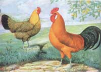
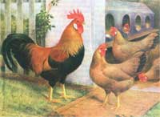
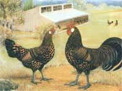
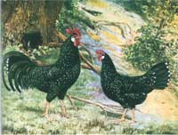

Best Chickens For Mother's Mini-Coop
The best chicken varieties for MOTHER's Mini-Coop, including buttercups, brown leghorns, hamburgs and anconas.
February/March 2003
Chickens have been domesticated for thousands of years and dozens of beautiful breeds have been developed. Some "dual-purpose" breeds like Rhode Island Reds or Barred Rocks lay a good number of eggs and also put on weight well for meat. But MOTHER'S mini-coop (Page 38) is designed specifically for egg production by foraging hens, so we asked our experts to name the breeds that are the best egg-layers and good foragers. As it turns out, their recommendations are breeds that are smaller than better-known dual-purpose breeds, and these smaller egg-laying specialists - Buttercups, Brown Leghorns, Hamburgs and Anconas - will be more comfortable in the confined space of the mini-coop.
Butter Cups
Developed centuries ago in Sicily, Buttercups are golden-colored, with unique cup-shaped combs and beautiful, dark-spangled (polka-dotted) feathers. According to Wright's Book ofPoultry (1910), Buttercups are "small eaters and great foragers." They lay eggs "of a rich and delicate flavour" and are especially docile, "due, doubtless, to their long and close association with the Sicilian peasants, in whose homes they wandered freely in and out."
Brown Leghorns
Hardy and active Leghorns (pronounced "leggerns"), which originated near the city of Leghorn in Italy, are outstanding egg layers. Female Brown Leghorns are medium brown with delicate penciling, darker brown wings and salmon breasts. The lively chicks are striped like chipmunks.
Hamburgs
Very snappy and alert, Hamburgs were once known in Holland as the Dutch Everyday Layers. They can be gold or silver, spangled (polka-dotted) or penciled (pin-striped). They are small eaters, good foragers and prolific layers.
Anconas
Originally known as Black Leghorns, Anconas have lustrous black feathers, some tipped with white, giving a beautiful mottled appearance. The chicks are black and white. Very active foragers, Anconas are "as good as the best at winter laying" and easily trained in pens, according to Wright's Book of Poultry.
These beautiful illustrations of heritage breeds are reproduced courtesy of WATT Poultry Press. A four-page catalog of WATT's 8 x 12-inch color prints is available from: Denise Slager; WATT Poultry Press; 122 S. Wesley Ave.; Mount Morris, IL 61054
Mail-Order Chicken Hatcheries
Stromberg's
Box 400; Pine River, MN 56474
(800) 720-1134; www.strombergschickens.com
Welp's Hatchery
Box 77; Bancroft, IA 50517
(800) 458-4473; www.welphatchery.com
Sand Hill Preservation Center
1878 230th St.; Calamus, IA 52729
(563) 246-2299
Clearview Hatchery
Box 399; Gratz, PA 17030
(717) 365-3234
Marti Poultry Farm
Box 27; Windsor, MO 65360
(660) 647-3156
MurrayMcMurray Hatchery
PO. Box 458; Webster City, IA 50595
(800) 456-3280; www.mcmurrayhatchery.com
Hoffman Hatchery
Box 129; Gratz, PA 17030
(717) 365-3694; www.hoffmanhatchery.com
Roblyn Eyrie Farm
R.R. #3; Perth, ON K7H-3C5
(613) 267-9732
(Can't mail to the United States)
 |
 |
 |
|
 |
 |
|